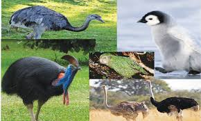

Overview
Flightless birds are a diverse group of birds that have evolved to live without the ability to fly. While penguins are the most well-known flightless birds, there are many others, each with unique adaptations to their environments.
Examples of Flightless Birds
- Ostrich: The largest bird in the world, native to Africa. Unlike penguins, ostriches are adapted for running and can reach speeds of up to 45 mph.
- Emu: Native to Australia, emus are the second-largest bird species. They are similar to ostriches in their running ability but differ greatly from penguins in habitat and diet.
- Kiwi: A small, nocturnal bird native to New Zealand. Unlike penguins, kiwis are terrestrial and have a highly developed sense of smell.
- Rhea: A South American bird that resembles a smaller ostrich. Rheas are adapted for running and live in grasslands, unlike penguins, which are aquatic.
- Cassowary: A large, colorful bird native to the tropical forests of New Guinea and northern Australia. Cassowaries are known for their powerful legs and are very different from penguins in behavior and habitat.
Comparisons to Penguins
While penguins are adapted for swimming and live primarily in cold or temperate aquatic environments, other flightless birds have evolved for different purposes:
- Habitat: Penguins are aquatic, while most other flightless birds are terrestrial and live in grasslands, forests, or deserts.
- Movement: Penguins are excellent swimmers, using their flippers to propel through water. Other flightless birds, like ostriches and emus, are adapted for running with strong legs.
- Diet: Penguins primarily eat fish, krill, and squid, while other flightless birds have diets ranging from plants to insects.
- Size: Penguins are generally smaller than ostriches and emus but larger than kiwis.